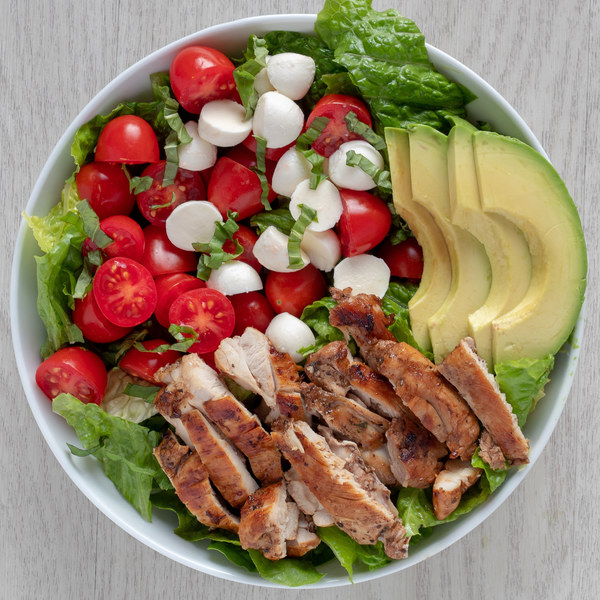

Home

Balsamic Grilled Chicken with Fresh Mozzarella & Avocado Salad Bowl
Cookware
- chef's knife
- colander
- cutting board
- garlic press (optional)
- measuring spoons
- mixing bowls
- stainless steel or cast iron skillet
- tongs
- whisk or fork
Ingredients
- avocado 1
- chicken thighs, boneless skinless 2 lb
- fresh basil 1 small pkg
- fresh mozzarella cheese 1/2 (8 oz) pkg
- garlic 4 cloves
- grape tomatoes 2 pints
- romaine lettuce 2 heads
- balsamic vinegar
- basil, dried
- extra virgin olive oil
- pure maple syrup
- salt
- virgin coconut oil
Instructions
- Wash and dry the fresh produce.
- 2 heads romaine lettuce
- 2 pints grape tomatoes
- 1 avocado
- 1 small pkg fresh basil
- Peel and mince garlic; transfer to a small bowl.
- To finish the marinade, add balsamic vinegar, olive oil, maple
syrup, dried basil, and salt to the bowl with the garlic; whisk
to combine.
- 1/2 cup balsamic vinegar
- 1/4 cup extr virgin olive oil
- 2 tsp pure maple syrup
- 2 tsp basil
- 2 tsp salt
- Preheat a skillet over medium-high heat.
- Transfer chicken to a shallow bowl. Pour half of the marinade
over the chicken and stir until well coated. Set the remaining
untouched marinade aside to use as salad dressing.
- 2 lb chicken thighs, boneless skinless
- Once the skillet is hot, add oil and swirl to coat the bottom.
Add chicken and cook until cooked through, 4-5 minutes per side.
Transfer to a plate and set aside to cool.
- 1 tbsp virgin coconut oil
- Chop romaine crosswise into strips and divide between bowls.
Halve grape tomatoes and add to the bowls with the romaine.
- Cut the fresh mozzarella into bite-sized pieces and add to the
bowls.
- 1/2 (8 oz) pkg fresh mozzarella cheese
- Halve and pit the avocado. Slice thinkly while still in skin,
then scoop out and add to the bowls.
- Slice chicken into strips and add to the bowls.
- Pick leaves off the basil stems, roll up crosswise and thinly
slice into ribbons and sprinkle over top of the salad.
- Drizzle with remaining dressing and enjoy!